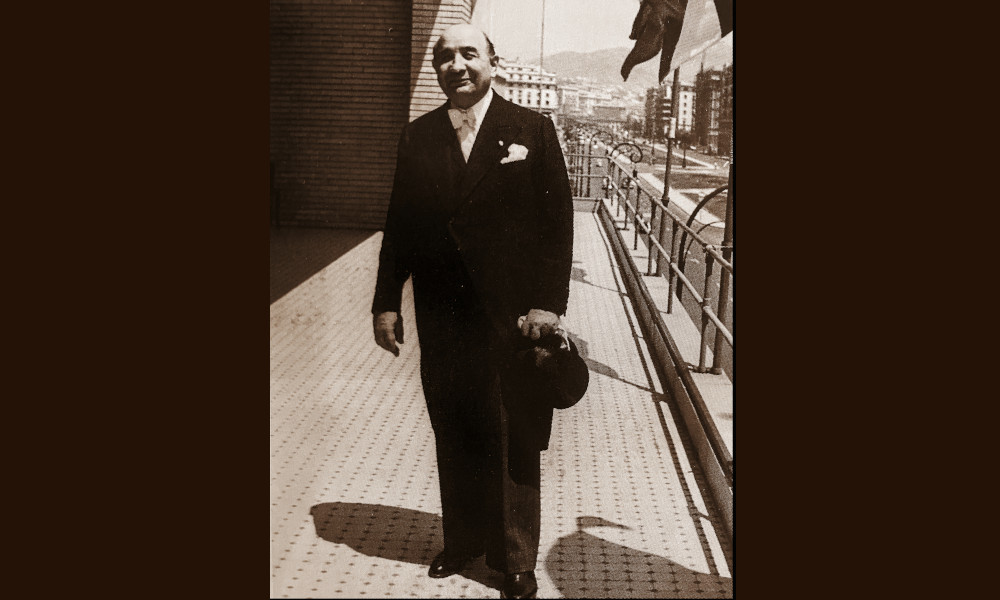

Bossi
Genova, entità attiva dal 1920 al 1970

- PERSONA
- Ferruccio Ildebrando Bossi, 1884–1970, antiquario
- SEDE
- Via Assarotti 1, Genova · 1920 ca.–1970
- IN CATALOGO
- Opere transitate, catalogo della Fondazione Zeri →
Ferruccio Ildebrando Bossi (1884-1970) fu un commerciante genovese attivo nella compravendita di opere d'arte tra gli anni Venti e Settanta del Novecento. Giorgio Batini nei suoi scritti ricorda che l'antiquario possedeva una galleria presso la propria abitazione in via Assarotti 1, dove riceveva privatamente i clienti.
Nonostante si dichiarasse contrario alla specializzazione, trattò soprattutto tessuti, mobili genovesi e dipinti antichi. Nell'arco della carriera vendette e collezionò arte genovese del Seicento; tra gli artisti da lui prediletti figurano Valerio Castello e Alessandro Magnasco.
Ben inserito nell'alta società cittadina ebbe tra i suoi clienti il grande collezionista Angelo Costa (1901-1976). Nel 1924 venne accusato di una serie di furti di opere d'arte e di contrabbando, vicende rispetto alle quali si dichiarò sempre totalmente estraneo.
Clienti
- Angelo Costa
Bibliografia essenziale
- Batini, G. (1961), L'antiquario, Firenze, Vallecchi
- Romanengo, M. (2001), Il mondo del collezionismo privato a Genova nel Novecento, In Orlando, pp. 110-120